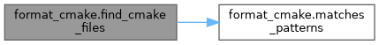
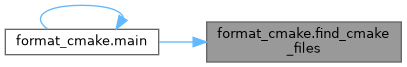
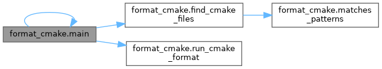
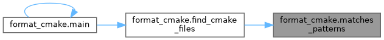
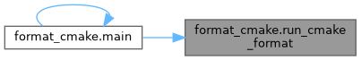

|
Enocean Core
|
Functions | |
| matches_patterns (filename, patterns) | |
| find_cmake_files (root_dir, exclude_dirs) | |
| run_cmake_format (files, config=None, check_only=False, dry_run=False) | |
| main () | |
Variables | |
| list | CMAKE_FILES_PATTERNS |
| Patterns for matching CMake files to format. | |
@file cmake_formatter.py @brief A utility script to recursively format CMake files.
| format_cmake.find_cmake_files | ( | root_dir, | |
| exclude_dirs | |||
| ) |
@brief Recursively scans the root directory for CMake files, skipping excluded directories. @param root_dir The starting directory for the search. @param exclude_dirs A set of absolute paths to directories to skip. @return A list of absolute paths to found CMake files.
Definition at line 31 of file format_cmake.py.


| format_cmake.main | ( | ) |
@brief Main entry point for the script.
Definition at line 99 of file format_cmake.py.

| format_cmake.matches_patterns | ( | filename, | |
| patterns | |||
| ) |
@brief Checks if a filename matches any of the given glob patterns. @param filename The name of the file to check. @param patterns A list of glob patterns (e.g., ["*.txt"]). @return True if the filename matches any pattern, False otherwise.
Definition at line 21 of file format_cmake.py.

@brief Runs cmake-format on a list of files. @param files A list of file paths to format. @param config Optional path to a configuration file. @param check_only If True, only check if files are formatted correctly without modifying. @param dry_run If True, show what would be formatted without making changes. @return A list of tuples containing (filename, exception/message) for any failures or issues.
Definition at line 49 of file format_cmake.py.

| format_cmake.CMAKE_FILES_PATTERNS |
Patterns for matching CMake files to format.
Definition at line 16 of file format_cmake.py.